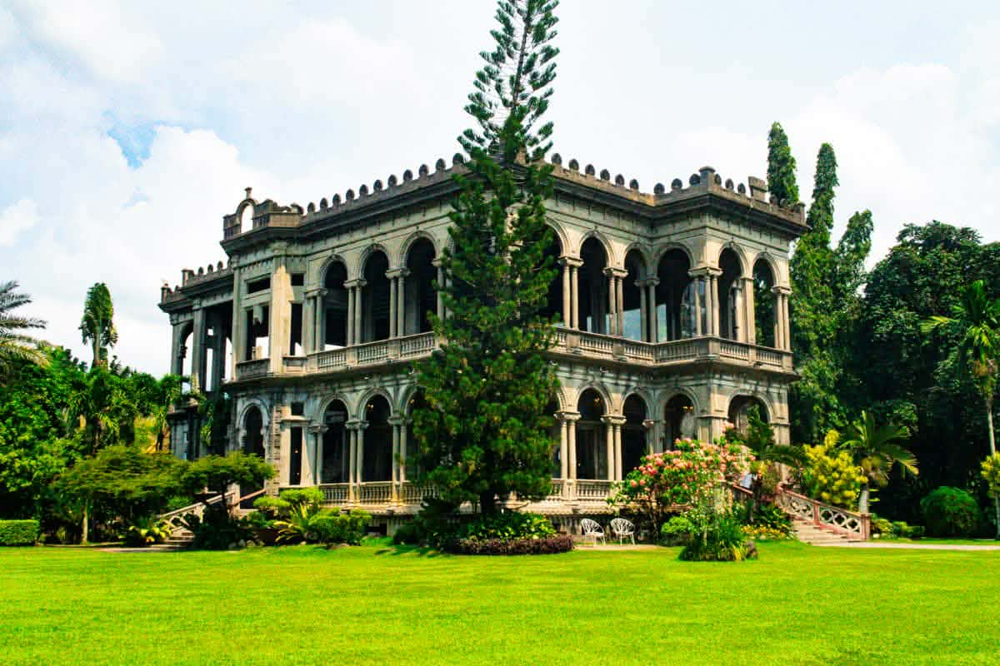
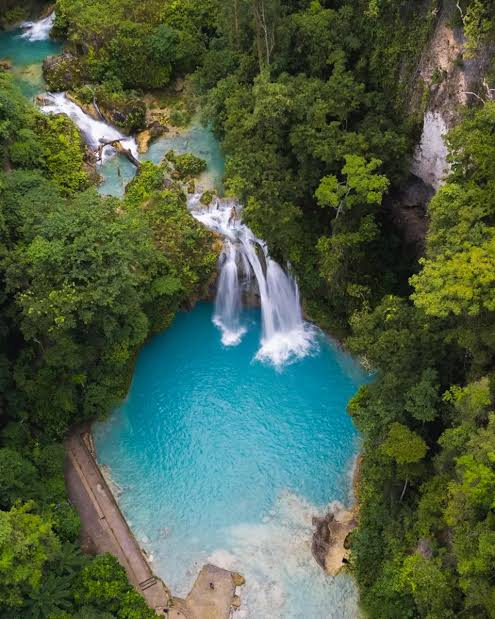
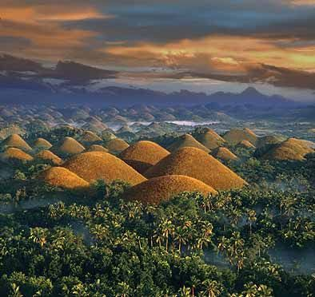
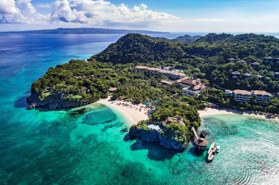

Bacolod "The Ruins"
A historic mansion in Bacolod. It was burned during World War II.

Kawasan Falls
Known for its clear blue water. It is popular for swimming.

Bohol Chocolate Hills
Over 1,000 cone-shaped hills. They turn brown during the dry season.

Boracay
Famous for its white sand beaches. It has crystal-clear waters.

Kalanggaman Beach
Known for its long white sandbars. It has clear blue waters.